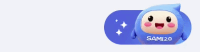
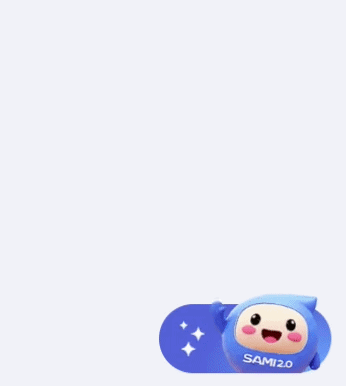
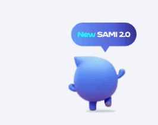

사내 AI 프로그램 아이콘 리뉴얼
AI 캐릭터 기반 플로팅 아이콘 모션 리뉴얼
사내 AI 프로그램 캐릭터를 활용해 플로팅 아이콘 리뉴얼을 위해 모션이 있는 버튼 형태의 GIF로 제작했다. Adobe Firefly로 4초 분량의 크로마키 영상을 생성한 뒤 배경을 제거하여 최종 GIF를 완성했다.

모션이 적용된 사내 AI 프로그램 플로팅 아이콘의 최종 GIF
Context
사내에서 사용하는 AI 프로그램의 UI 아이콘 개선 프로젝트. 기존 AI 생성 3D 캐릭터 자산을 재활용해야 했고, 벡터 파일이 없는 상태에서 모션 아이콘을 제작해야 했다.


기존 캐릭터 자산을 활용해 생동감을 더한 모션 아이콘으로 리뉴얼 / AI 영상 생성부터 GIF 변환까지의 제작 프로세스 개요
Problem
- 기존 3D 캐릭터 자산의 벡터 파일 부재
- 정적인 아이콘으로는 생동감 전달이 어려움
- 원하는 영상 결과물을 안정적으로 얻기 어려움
- GIF 변환 과정에서 품질 및 배경 처리 관련 시행착오 발생

크로마키를 활용해 배경 제거를 용이하게 처리
Strategy
- 기존 캐릭터를 중심으로 플로팅 아이콘 및 모션 버튼 콘셉트 수립
- Adobe Firefly를 활용해 4초 영상 생성 및 크로마키 방식 적용
- 키워드와 고정 이미지를 반복 사용해 일관된 영상 결과 확보
- 영상에서 GIF로의 전환을 전제로 배경 제거 및 포맷 적합성 우선

반복 테스트를 통해 의도한 모션 감도를 확보한 최종 GIF
Execution
- 기존 캐릭터 자산을 검토하고 플로팅 아이콘 기획 수행
- Adobe Firefly에서 4초 분량 모션 영상 생성
- 크로마키 배경으로 제작 후 배경 제거 처리
- 영상에서 GIF로 변환하고 반복 테스트를 통해 원하는 결과물 확보

기존 캐릭터의 아이덴티티를 유지하면서 UI 아이콘 용도로 조정된 비주얼
Result
모션이 적용된 플로팅 아이콘 GIF를 완성했으며, AI 기반 영상 생성과 GIF 전환을 결합해 목표한 생동감을 구현했다.
insight
AI 생성물의 일관성 확보에는 키워드와 참조 이미지의 고정이 유효했고, GIF 전환 품질은 배경 처리와 반복 테스트에 크게 좌우된다.